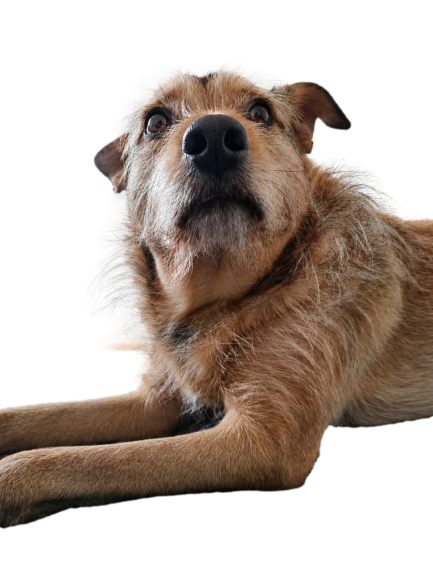

NIE CMOKAĆ NAPSA

KOCHASZ PSY I GDY JE WIDZISZ CHCESZ JE TULIĆ I GŁASKAĆ, CAŁOWAĆ I JESZCZE C A Ł O W A Ć ?
STO P! [P JAK PIES]

KOCHASZ PSY I GDY JE WIDZISZ CHCESZ JE TULIĆ I GŁASKAĆ, CAŁOWAĆ I JESZCZE C A Ł O W A Ć ?
STO P! [P JAK PIES]